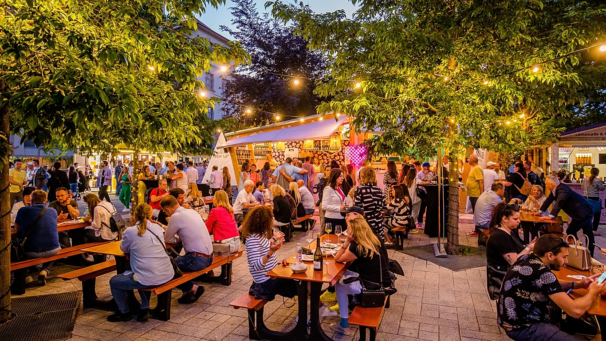

Festival hrane se je začel leta 2018 kot majhen lokalni dogodek na mestnem trgu, kjer so se predstavili domači kuharji, pekarne in manjši pridelovalci. Prvo leto je sodelovalo le deset stojnic, a vzdušje, glasba in pristni okusi so hitro pritegnili več sto obiskovalcev.
Z leti je festival rasel in danes združuje ponudnike iz vse Slovenije ter tudi goste iz tujine. Ponosni smo, da dajemo prostor lokalnim sestavinam, sezonskim jedem in ustvarjalnosti mladih kuharjev.
Naša vizija je povezovati skupnost, podpirati trajnostno pridelavo hrane ter ustvariti dogodek, kjer se prepletajo tradicija, inovacija in sodobni kulinarični trendi. Verjamemo, da dobra hrana povezuje ljudi in ustvarja nepozabne spomine.
Festival ni le kulinarični dogodek – je prostor druženja, glasbe, smeha in novih doživetij. Vsako leto si prizadevamo, da obiskovalcem ponudimo še bogatejši program, več raznolikih okusov in prijetno vzdušje za vse generacije.